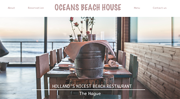
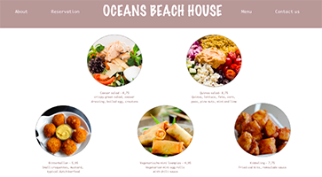
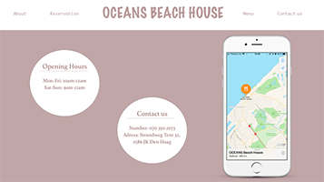

Project Hightlights
The Project that found the most interesting so far was the first project in Skill Lab, which was designing a website that was something about The Hague.
Website
Hompage
The website had to consist of three different pages. The first page that I created was the "Hompage". I inserted a picture of a beach house, so that the user already knows what kind of restaurent it is. The page also had a name of the restaurent and next to the name (left and right), the user could click to different pages, which were; About, Reservation, Menu and Contact us.
Menu
The second page that I designed for this website was the "Menu" page, meaning with this that the users could see what kind of food you can eat at this restaurent. I also inserted pictures of the different meals, so that the users would get a better picture of what kind of food it is. I also added a short description under each meal, so that the user would know what is inside.
Contact
The third page that I designed in this website was the contact page, which is were users could see where the restaurent is located. Also I inserted opening hours, so that they know when they could eat there. Thirdly, to make it more pleasing for the eye, I inserted a "iPhone" picture that would show a digital map of where the restaurent is located in The Hague.
